effect of varying parameters: hard negative mining (with and without cap of 10k)
Brief overview of algorithm and implementation
In this project, I have implemented a face detection pipeline based on the sliding window model which uses a Histogram of Gradients (HoG) representation similar to Dalal-Triggs. I have implemented the following sections:
\textbf{\underline{Section 1 \(Extracting positive and random negative HoG features\)}:-}
The training set used for this pipeline consists of 6,713 cropped 36x36 faces from the Caltech Web Faces project. My implementation of get_positive_features() loads each of these images in greyscale and converts them into a HoG feature of dimensionality $(6 \times 6 \times 31)$ using vlfeat.hog.hog(img,cell_size). This is due to the fact that each of the images are $(36 \times 36)$ in dimensions and my choice of the cell_size feature parameter is 6. The features are then flattened into 1D arrays, stacked together and returned.
To extract random negative features (HoG features from non-face scenes), my implementation of get_random_negative_features(), first loads each non-face scene as a greyscale image, and then enters into a nested for-loop wherein the image is down-scaled by preset scale values. Because I choose to use cell_size = 6, my code checks if down-scaling causes the image dimensions to shrink below $(36 \times 36)$, in which case the image is down-scaled to a minimum dimensionality of $(36 \times 36)$ to ensure that the extracted negative HoG feature matches the dimensionality of the extracted positive HoG features. If the down-scaled images are much bigger than $(36 \times 36)$, my code uses a sliding window methodology to extract $(36 \times 36)$ image patches and convert them into flattened HoG features. The sliding window step or stride is preset by step_size parameter. After iterating through all images and storing the extracted features, num_samples=10000 indicies are randomly sampled without replacement and the corresponding HoG features are returned. All of the collected features can also be returned by setting the boolean return_all to True.
\textbf{\underline{Section 2 \(Training linear SVM classifier\)}:-}
The extracted positive and negative features (from Section 1 and Section 3) are used to train a linear SVM with targets of 1.0 and -1.0 respectively. The hyper-parameter C (regularization constant) was tuned by trial and error.
\textbf{\underline{Section 4 \(Mining hard negative HoG features\)}:-}
The implementation for this section is very similar to code for extracting random negative features as in Section 1. The only difference being that the extracted HoG features are first tested by using the trained SVM (from Section 2) against a confidence threshold (passed as a parameter to mine_hard_negs()) and added to a list of hard negative features only if the prediction confidence exceeds the confidence threshold. In order to achieve high average precision, the confidence threshold is sometimes required to be much lower than 0.0, in which case the list of hard negatives can run into 100's of thousands which slows down the rest of the program (due to memory constraints on numpy arrays). Therefore, my code randomly samples 10,000 indices without replacement and returns the corresponding hard negative features.
\textbf{\underline{Section 5 \(Running a sliding window detector on test scenes\)}:-}
My implementation of run_detector() loads every test image as a greyscale image and then enters into a nested for-loop wherein the image is down-scaled by preset scale values for detection (similar to extracting negative features in Section 1). Then using a sliding window methodology image patches of dimension $(36 \times 36)$ are extracted, converted to HoG features and tested with the trained SVM from previous sections. The same confidence threshold as used for mining hard negatives is used here to determine if the patch is a probable face or not based on the predicted confidence. If the predicted confidence exceeds the confidence threshold, the confidence is stored along with the appropriately re-scaled bounding box coordinates. This process is repeated for all the other detection scales and the stored confidences and bounding boxes are then subject to Non-maximal suppression (NMS). For non-maximal suppression only the first topk detections are used which are determined by sorting the stored confidences. In order to achieve higher average precision, I set topk=200 to use plenty of detections for NMS. After NMS, the above process is repeated for all the other images in the test set.
Effects of parameters on performance and results
For all below experiments, positive HoG features from the 6,713 Caltech dataset and 10,000 randomly sampled negative features were extracted and kept constant throughout the experiments. For the negative examples, I used single-scale of 1.0 and sliding window step size of 15 to extract HoG features from non-face scenes.
I tested 6 different values of C. I used the following strategy to restrict my choices for C:- I experimented with values greater than 1e-2, such as 5e-1 and 1e-1, however, I ran into errors of convergence failure when training the SVM, whereas, for values smaller than 5e-4, such as 1e-5 and 5e-5, I observed significant overlap between positive and negative examples i.e. from the visualization of percentage of integers vs predicted score, the positive and negative exampes were clearly not well separated at training time for C = 1e-5 and C = 5e-5. The overlap was significantly smaller for the range of C values in (1e-2 to 5e-4).
C=1e-4
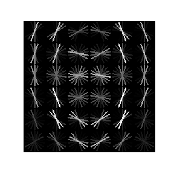
C=5e-4
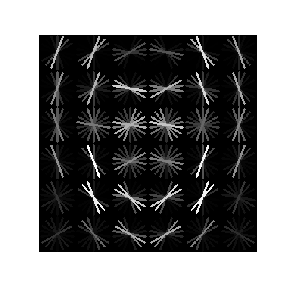
C=1e-3
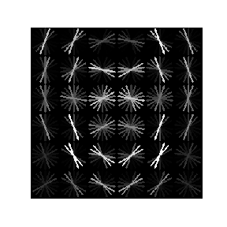
C=5e-3
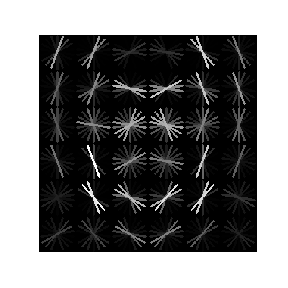
C=1e-2
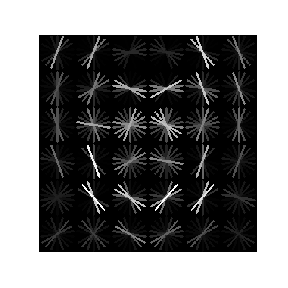
C=2e-2
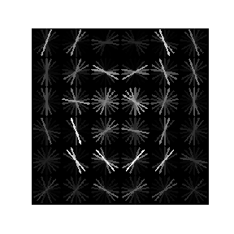
C=3e-2
C=4e-2
C=5e-2
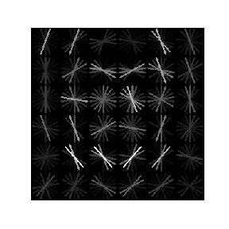
I performed an experiment to test the effect of changing C on test performance. For this experiment I did not use hard negative mining. The average precision values observed on the test set are plotted for the corresponding C values below:
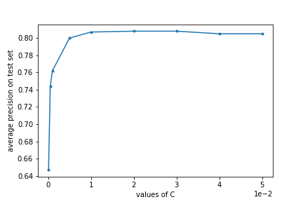
From this experiment I observed highest accuracy of 0.808 for C = 2e-2 and C = 3e-3. The HoG feature template visualization also corroborates these accuracies as C=2e-2 and C=3e-2 have the closest resemblances to human faces.
\textbf{\underline{Multi-scale vs Single scale detection}:-}
For this experiment as well, I did not use hard negative mining. Using the same positive and negative extracted HoG features as above experiment for both multi-scale and single-scale detection, I observed the following results:
(a.) Multi-scale experiment parameters: sliding window step size = $\mathbf{10}$, confidence threshold = $\mathbf{-1.0}$, topk = $\mathbf{200}$, C (SVM regularization) = $\mathbf{2e^{-2}}$, Total runtime for detection = $\mathbf{190.292\;seconds}$
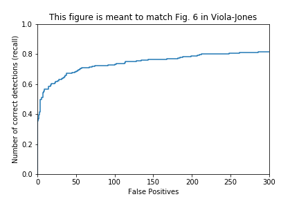
Detector was run at scales of: [1.0, 0.9, 0.8, 0.75, 0.7, 0.65, 0.6, 0.55, 0.5, 0.45, 0.4, 0.35, 0.3, 0.25]
(b.) Single-scale experiment parameters: sliding window step size = $\mathbf{5}$, confidence threshold = $\mathbf{-1.0}$, topk = $\mathbf{200}$, C (SVM regularization) = $\mathbf{2e^{-2}}$, Total runtime for detection = $\mathbf{147.91\;seconds}$
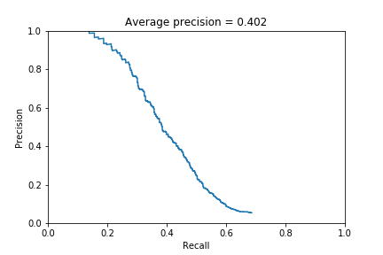
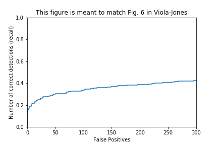
Detector was run at scale of 1.0
(c.) Same multi-scale parameters as in (a.) except with sliding window step size = $\mathbf{5}$. Total runtime for detection = $\mathbf{751.83\;seconds}$
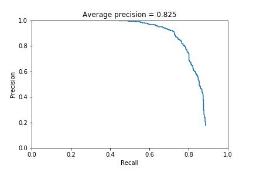
Detector was run at scales of: [1.0, 0.9, 0.8, 0.75, 0.7, 0.65, 0.6, 0.55, 0.5, 0.45, 0.4, 0.35, 0.3, 0.25]
From the above results I can draw 2 conclusions:
(i.)Downscaling helps
(ii.)smaller steps helps improve accuracy but slows down detection.
\textbf{\underline{Hard mining for negative HoG features}:-}
Starting with the same positive and negative extracted HoG features as above experiments, hard negative HoG feature mining was performed using the same scale of 1.0 and sliding window step size of 15 as for extracting random negative HoG features and the trained SVM with C=2e-2. A confidence threshold of -1.0 was used to decide if a particular negative HoG feature is a false positive or not using the SVM prediction confidence. This threshold was the same as that used during detection on test images. The new SVM with random extracted negative HoGs and hard mined negatives was trained using the same value for regularization constant of C=2e-2. Following are some results:
Experiment parameters: sliding window step size = $\mathbf{10}$, confidence threshold = $\mathbf{-1.0}$, topk = $\mathbf{200}$, C (SVM regularization) = $\mathbf{2e^{-2}}$, Detector was run at scales of: [1.0, 0.9, 0.8, 0.75, 0.7, 0.65, 0.6, 0.55, 0.5, 0.45, 0.4, 0.35, 0.3, 0.25]
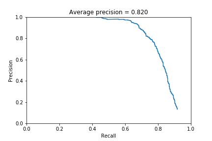
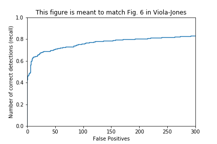
WITH Hard mined negative HoG featuresWITHOUT Hard mined negative HoG features
 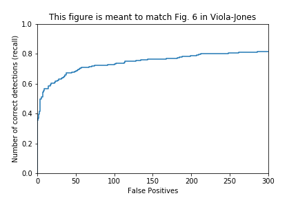
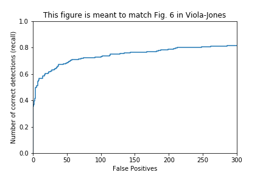


 C=4e-2
C=4e-2
 C=5e-2
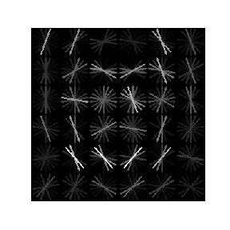
C=5e-2
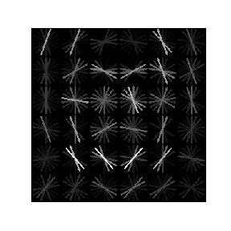